Texto extraído da edição fornecida, sem atualização normativa. Consulte a página original para conferir tabelas, formulários e instruções ilustradas. A numeração dos links corresponde à página do arquivo PDF.
Acesso ao Siapenet
PDF · p. 1ANEXO N
LANÇAMENTO DA APOSENTADORIA NO SISTEMA SIAPENET
✓ É necessário que o operador tenha acesso aos sistemas SIAPE e SIGEPE para operacionalizar os sistemas
apresentados neste tutorial.
1º Passo: entrar no sistema SIAPENET.
• Clicar na opção Órgão:
2º Passo: acessar com o certificado digital.
• O operador deverá acessar o portal por meio do certificado digital:
Ver página original — tabelas, imagens e diagramas
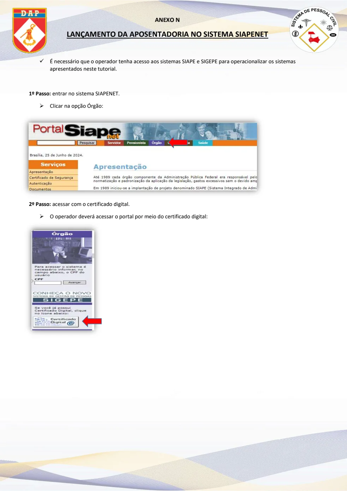
Acesso ao SIAPE e comandos
PDF · p. 23º Passo: página inicial do SIAPENET.
• Para acessar a “Tela Preta”, acessar o ícone “Acesso SIAPE”:
4º Passo: acesso à tela de comandos.
• Para realizar a concessão da aposentadoria, na tela de COMANDO digitar a transação “> CAAPSERVID” e
“ENTER”:
Ver página original — tabelas, imagens e diagramas
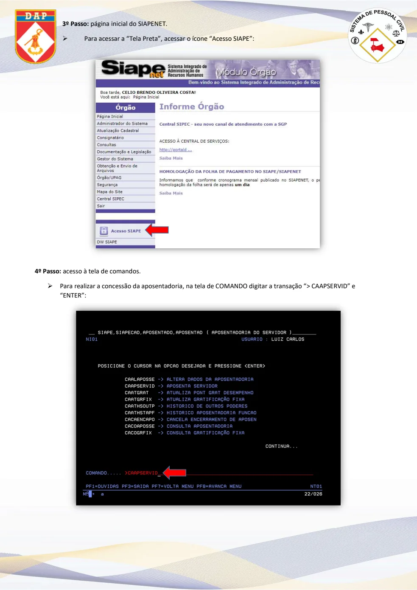
Identificação do servidor
PDF · p. 35º Passo:
• Digitar a matrícula SIAPECAD do(a) servidor(a) e clicar na tecla F1:
6º Passo:
• Digitar a matrícula do(a) servidor(a) e “ENTER”:
7º Passo:
• Selecionar o(a) servidor(a) e “ENTER”:
Ver página original — tabelas, imagens e diagramas
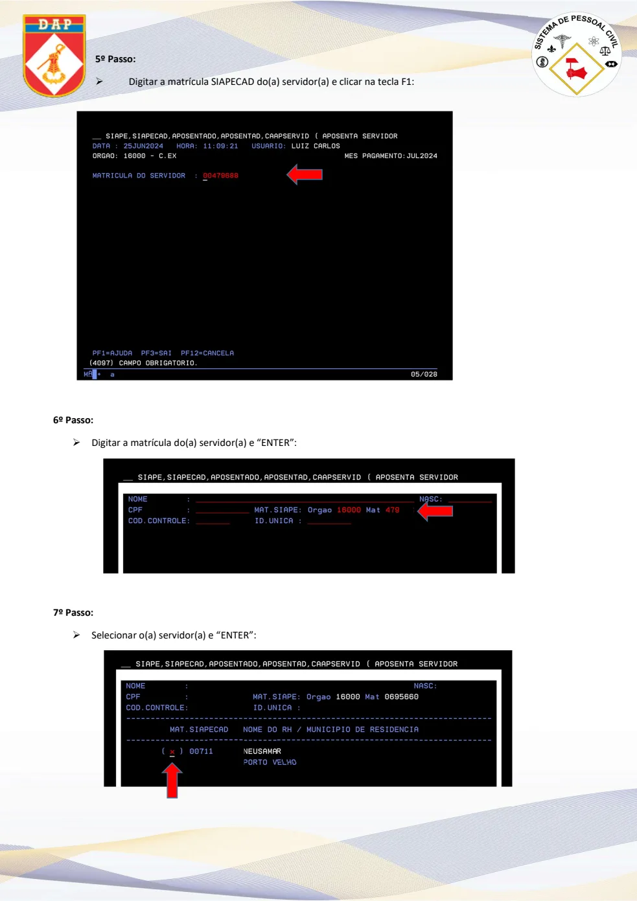
Fundamento legal
PDF · p. 48º Passo:
• O operador será redirecionado para a tela anterior, devendo clicar em “ENTER” para
prosseguir:
9º Passo
• Nesta tela, o operador deve registrar o fundamento legal, conforme os documentos contidos no processo de
aposentadoria do servidor, juntamente com a portaria de concessão de aposentadoria:
10º Passo: inclusão do fundamento.
• Ao clicar na tecla “F1”, abrirá uma tela com a lista de fundamentos, o operador deverá selecionar o fundamento
conforme publicado na portaria de aposentadoria. Após identificar o fundamento, selecioná-lo e ‘ENTER”:
Obs: Os fundamentos utilizados atualmente iniciam com o código “049”.
Ver página original — tabelas, imagens e diagramas
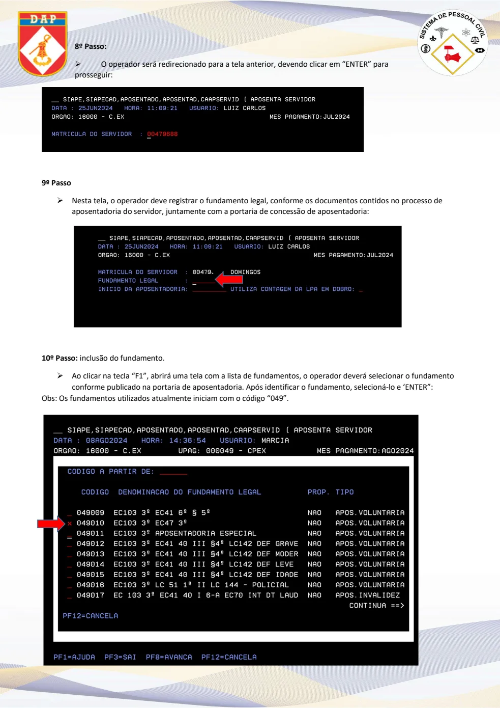
Início e informações da aposentadoria
PDF · p. 511º Passo
• Na opção início da aposentadoria, digitar a data da publicação da portaria no Diário Oficial
da União (DOU), em seguida clicar “Enter”.
• Na opção utiliza contagem da LPA em dobro, digitar “S” para sim e “N” para não, de acordo com a informação do
mapa de tempo de serviço no processo de aposentadoria. Em seguida, “ENTER”.
12º Passo:
• Na tela abaixo, preencher as informações dos campos destacados em vermelho:
Ver página original — tabelas, imagens e diagramas
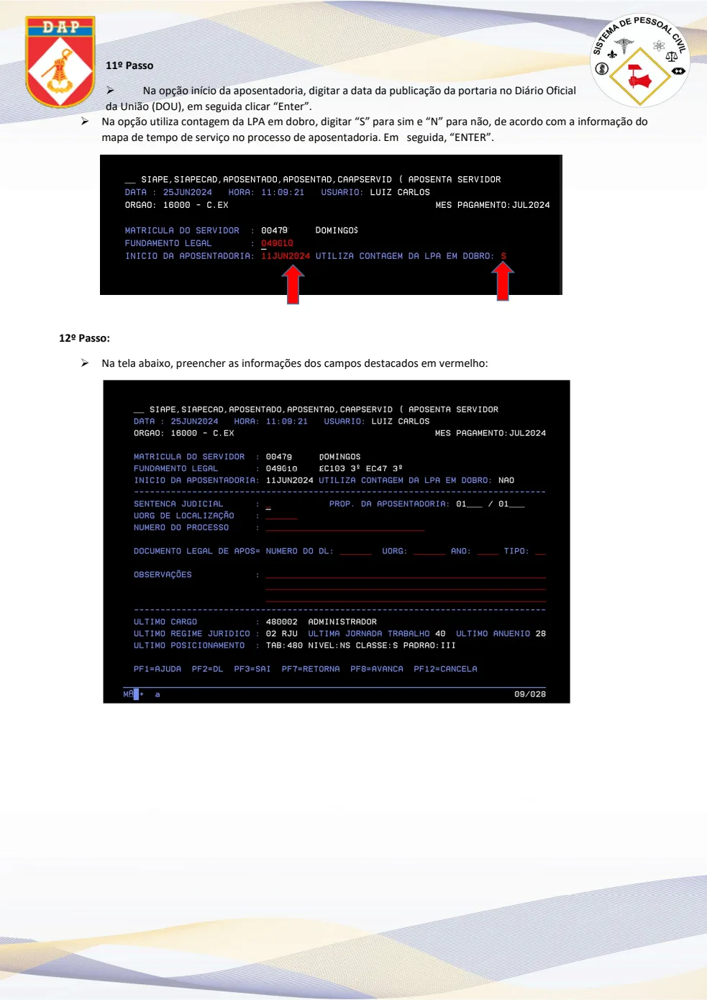
Preenchimento
PDF · p. 613º Passo:
• Seguir com o preenchimento das informações destacadas em vermelho, sendo:
• Sentença Judicial: “S” se a aposentadoria for por determinação judicial e “N” se não for;
• UORG de localização: o código do local onde o(a) servidor(a) ficará vinculado(a), de
acordo com o informado no processo de aposentadoria;
• Número do processo: código EB disponível na portaria
• Documento Legal de Apos=Número do DL: número da portaria de aposentadoria*
*após preencher esta informação, clicar na tecla F2 e irá abrir a tela abaixo, onde:
• DL interno UORG: 027
• Ano: Ano de publicação da portaria
• Tipo: 02
• Número: número da portaria
• Assunto: 059
• Emissão: Data de emissão da portaria
• Vigência: Data da publicação da portaria no Diário Oficial
• Publicação: Data da publicação da portaria no Diário Oficial
Após o preenchimento das informações, clicar na tecla F3 onde aparecerá a tela abaixo:
Ver página original — tabelas, imagens e diagramas
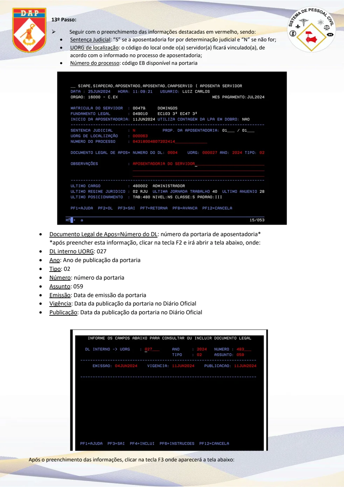
Portaria
PDF · p. 714º Passo:
• Nesta tela, clicar na tecla F4 e “ENTER”:
15º Passo:
• Marcar a portaria com o (X) e “ENTER”:
Ver página original — tabelas, imagens e diagramas
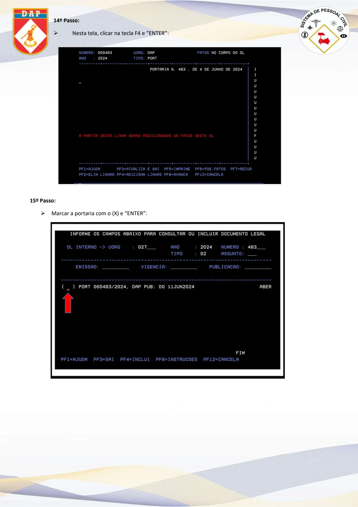
Observações
PDF · p. 816º Passo:
• O sistema retornará para a tela abaixo, onde deve ser incluída a informação no campo
observações, conforme o exemplo e após, “ENTER”:
16º Passo:
• Nesta tela, caso o(a) servidor(a) seja professor(a), o campo com a informação “opção pela média de pontos”
deve ser informado “N”, para os demais cargos deve ser informado “S” e após, “ENTER”:
17º Passo:
• Nesta tela irá aparecer a média de pontos do servidor, clicar “ENTER”:
Ver página original — tabelas, imagens e diagramas
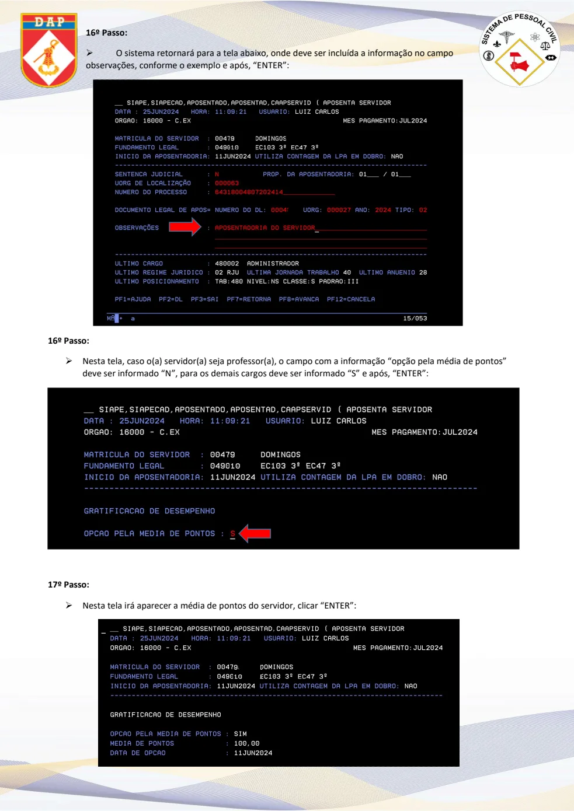
Confirmação
PDF · p. 918º Passo:
• Verificar se o servidor continuará na função ocupando cargo em comissão, caso
negativo, registrar a opção “N” e “ENTER”:
19º Passo:
• Com todos os dados preenchidos, o sistema irá pedir a confirmação da concessão da aposentadoria.
Confirmar com “S”, a ação será concluída e a aposentadoria concedida:
Obs: Caso haja crítica no momento de finalizar, verificar e tratar a divergência e após realizar o lançamento da
aposentadoria novamente.
Ver página original — tabelas, imagens e diagramas
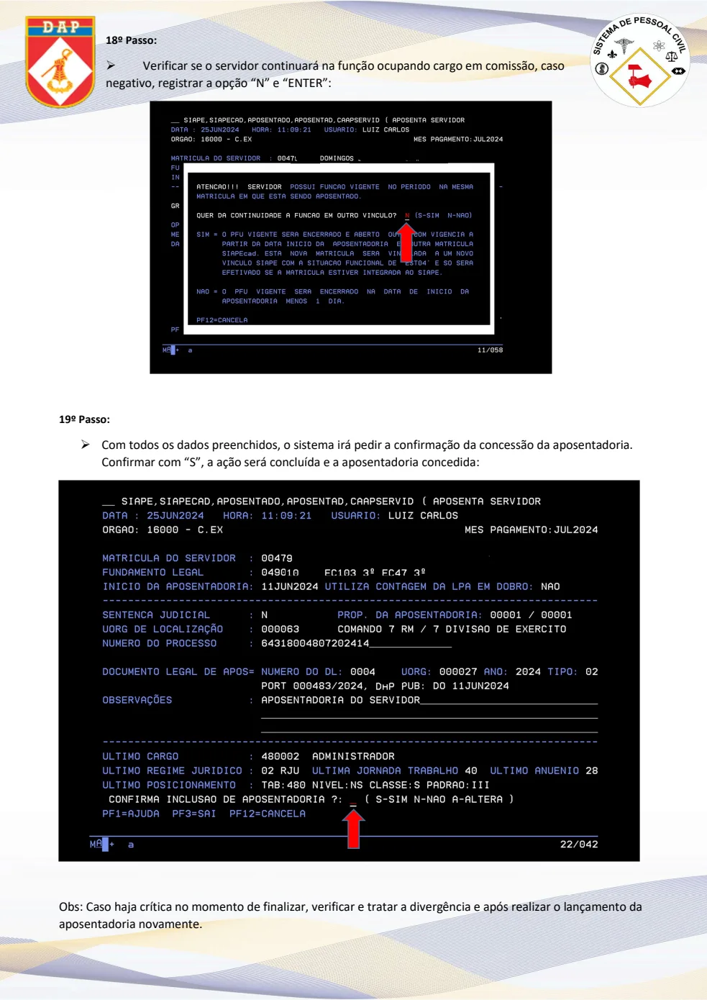
Emissão do título de inatividade
PDF · p. 10EMITIR O TÍTULO DE INATIVIDADE
✓ Após o lançamento da aposentadoria, deve ser emitido o Título de Inatividade
1º Passo
• Digitar a transação “>CAEMTITINA” e “ENTER”:
2º Passo
• Digitar a matrícula do(a) servidor(a), ou o nome, ou CPF e “ENTER”:
Ver página original — tabelas, imagens e diagramas
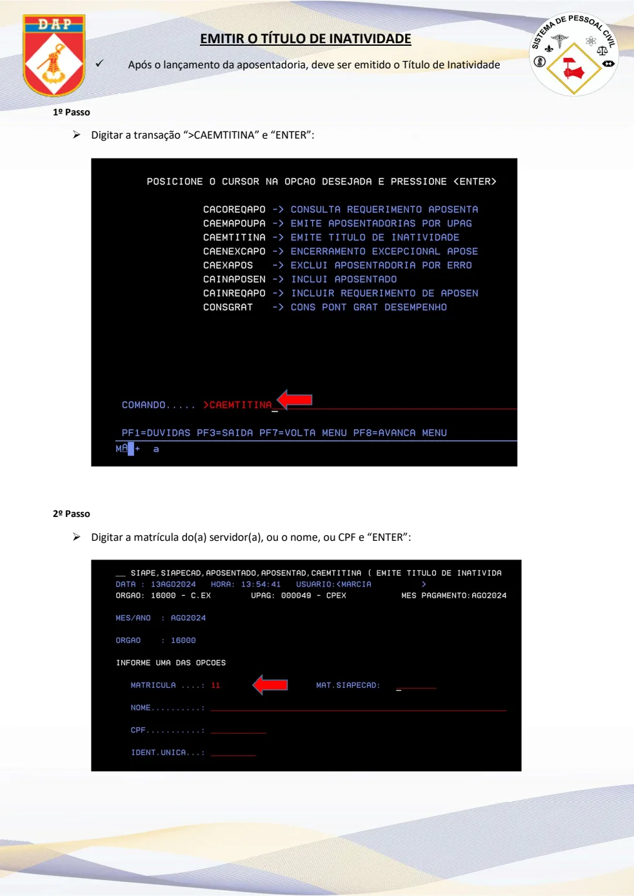
Emissão do título de inatividade
PDF · p. 113º Passo
• Selecionar a opção “título de inatividade” e “ENTER”:
4º Passo
• Nesta tela clicar na tecla “F5” para gerar o título:
Ver página original — tabelas, imagens e diagramas
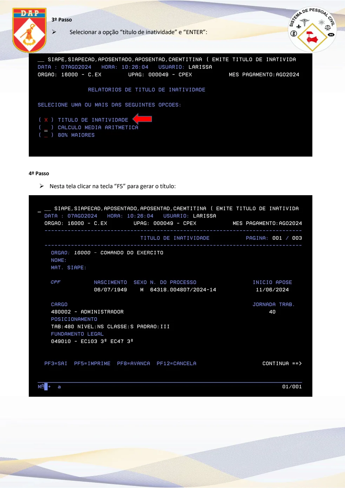
Emissão do título de inatividade
PDF · p. 12Obs: Para que o título seja gerado, a impressora “Relatórios 80” deve estar
selecionada.
• Para isso clicar 2 vezes na impressora:
• A impressora irá aparecer no canto direito em sessões ativas:
Ver página original — tabelas, imagens e diagramas
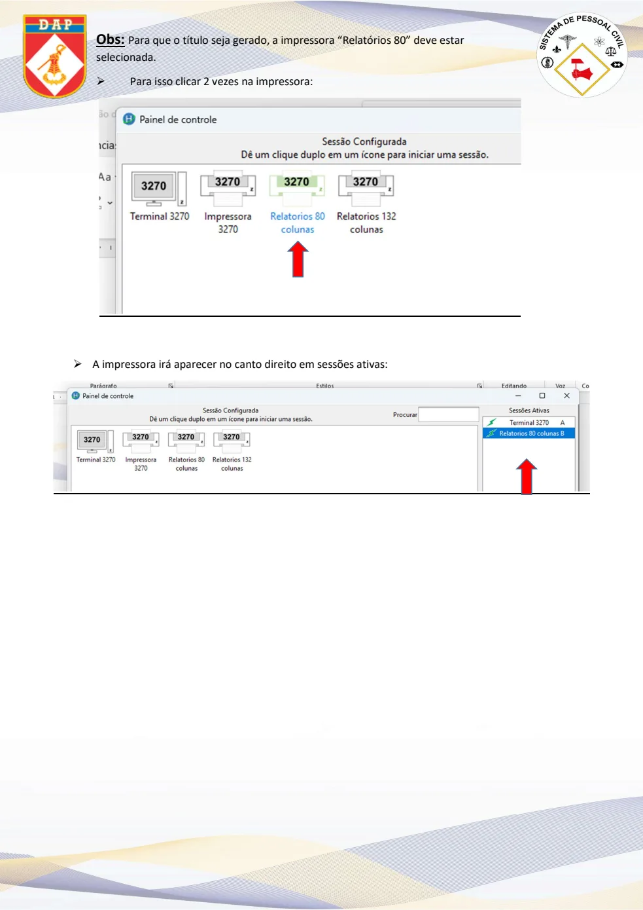
Emissão do título de inatividade
PDF · p. 135º Passo
• Após clicar em F5 como informado no 4º passo, irá aparecer a tela abaixo para
digitar o nome do arquivo e escolher onde o título será salvo e salvar:
Ver página original — tabelas, imagens e diagramas
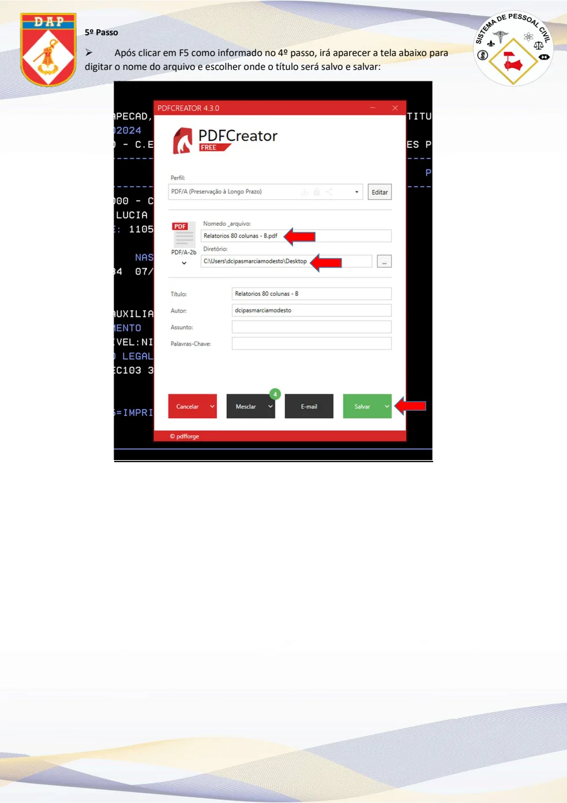
Modelo do título e considerações
PDF · p. 14Modelo do título de inatividade:
Considerações:
1- Sugere-se que o lançamento da aposentadoria no sistema seja realizado entre
a reabertura da folha (após o fechamento), até o último dia do mês, para evitar
divergências no pagamento do(a) servidor(a);
2- Após a emissão do título, o mesmo deve ser assinado eletronicamente;
3- Uma cópia do título assinado deve ser remetida ao Centro de Pagamento do
Exército (CPEx) e anexada ao Assentamento Funcional Digital (AFD) do
Servidor(a).
4- Sugere-se que o título seja encaminhado ao CPEx antes do fechamento da
folha, para que seja possível o ajuste no pagamento do(a) servidor(a), se
necessário;
Ver página original — tabelas, imagens e diagramas
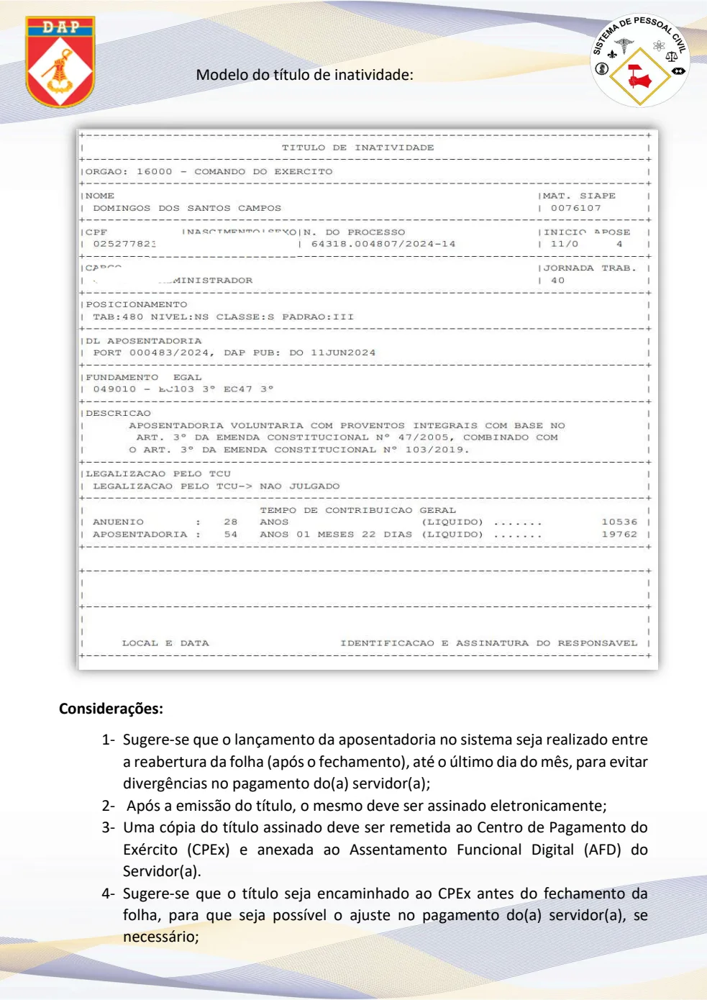